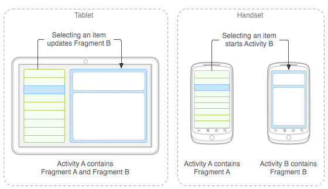
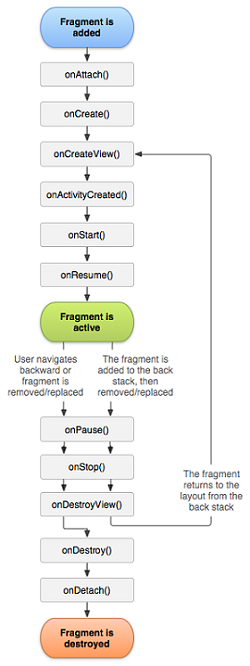

Menús & Framents
12 de Noviembre del 2020
Menús
Los menús son un componente común de la interfaz de usuario en muchos tipos de aplicaciones. Para proporcionar una experiencia de usuario conocida y uniforme, debes usar las API de Menu a fin de presentar al usuario acciones y otras opciones en las actividades. Las apps de Android dejarán de depender de los paneles de menú tradicionales de 6 elementos y, en su lugar, proporcionarán una barra de app para mostrar las acciones más comunes del usuario.
Para crear tres tipos fundamentales de presentaciones de menús o acciones en todas las versiones de Android:
Menú de opciones y barra de app
El menú de opciones es la colección principal de elementos de menú de una actividad. Es donde debes colocar las acciones que tienen un impacto global en la app, como "Buscar", "Redactar correo electrónico" y "Configuración".
Menú contextual y modo de acción contextual
Un menú contextual es un menú flotante que aparece cuando el usuario hace un clic largo en un elemento. Proporciona acciones que afectan el contenido seleccionado o el marco contextual. En el menú de acción contextual, se muestran los elementos de acción que afectan al contenido seleccionado en una barra en la parte superior de la pantalla y se permite al usuario seleccionar varios elementos.Menú emergente
Un menú emergente muestra una lista de elementos en una lista vertical que está anclada a la vista que invocó el menú. Las acciones en un menú emergente no deben afectar directamente al contenido correspondiente, ya que para eso están las acciones contextuales. En cambio, el menú emergente es para acciones extendidas relacionadas con partes del contenido de la actividad.
Cómo definir un menú en XML
Para todos los tipos de menús, Android proporciona un formato XML estándar que permite definir los elementos de menú. En lugar de incorporar un menú en el código de la actividad, debes definir un menú y todos los elementos en un recurso de menú XML.
El uso del recurso de menú es una práctica recomendada por algunos motivos:
- Es más fácil visualizar la estructura del menú en XML.
- Separa el contenido del menú del código de comportamiento de la aplicación.
- Te permite crear configuraciones alternativas del menú para diferentes versiones de plataforma, tamaños de pantalla y otras configuraciones aprovechando el marco de trabajo de recursos de la app.
Un grupo de menú es una colección de elementos de menú que comparten ciertas características. Con un grupo, puedes hacer lo siguiente:
- Define un Menu, que es un contenedor para elementos de menú. Un elemento "menu" debe ser el nodo raíz del archivo y puede tener uno o más elementos item y group..
- Crea un MenuItem, que representa un único elemento en un menú. Este elemento puede contener un elemento menu anidado para crear un submenú.
- Froup es el contenedor opcional e invisible para elementos item. Te permite categorizar los elementos de menú
Cómo crear grupos de menú
Para definir el menú, crea un archivo XML dentro del directorio res/menu/ del proyecto y desarrolla el menú con los siguientes elementos:
- Mostrar u ocultar todos los elementos con setGroupVisible().
- Habilitar o inhabilitar todos los elementos con setGroupEnabled().
- Especificar si todos los elementos se pueden marcar con setGroupCheckable().
Cómo agregar elementos de menú basados en una intent
Para agregar elementos de menú en función de actividades disponibles que aceptan una intent:
- Define una intent con la categoría CATEGORY_ALTERNATIVE o CATEGORY_SELECTED_ALTERNATIVE, además de otros requisitos.
- Llama a Menu.addIntentOptions(). Android busca aplicaciones que puedan realizar la intent y las agrega al menú.
|
Fragments
Representa un comportamiento o una parte de la interfaz de usuario en una FragmentActivity. Puedes combinar varios fragmentos en una sola actividad para crear una IU multipanel y volver a usar un fragmento en diferentes actividades. Puedes pensar en un fragmento como una sección modular de una actividad que tiene un ciclo de vida propio, que recibe sus propios eventos de entrada y que puedes agregar o quitar mientras la actividad se esté ejecutando (algo así como una "subactividad" que puedes volver a usar en diferentes actividades).
Se hablará de cómo crear tu aplicación para usar fragmentos, incluido cómo los fragmentos pueden mantener su estado cuando se agregan a la pila de actividades de la actividad, cómo pueden compartir eventos con la actividad y con otros fragmentos en la actividad, cómo pueden contribuir con la barra de app de la actividad
Filosofía de diseño

Android introduce los fragmentos en Android 3.0 (nivel de API 11), principalmente para admitir diseños de IU más dinámicos y flexibles en pantallas grandes, como las de las tablets. Como la pantalla de una tablet es mucho más grande que la de un teléfono, hay más espacio para combinar e intercambiar componentes de la IU. Los fragmentos admiten esos diseños sin la necesidad de que administres cambios complejos en la jerarquía de vistas. Al dividir el diseño de una actividad en fragmentos, puedes modificar el aspecto de la actividad durante el tiempo de ejecución y conservar esos cambios en una pila de actividades administrada por la actividad.
Cómo crear un fragmento
Generalmente, debes implementar al menos los siguientes métodos del ciclo de vida:
- onCreate(): El sistema lo llama cuando crea el fragmento. En tu implementación, debes inicializar componentes esenciales del fragmento que quieras conservar cuando el fragmento se pause o se detenga, y luego se reanude.
- onCreateView():El sistema lo llama cuando el fragmento debe diseñar su interfaz de usuario por primera vez. A fin de diseñar una IU para tu fragmento, debes mostrar un View desde este método, que será la raíz del diseño de tu fragmento.
- onPause(): El sistema llama a este método como el primer indicador de que el usuario está abandonando el fragmento (aunque no siempre significa que el fragmento se esté destruyendo).
Existen también algunas subclases que quizá desees extender, en lugar de la clase de base Fragment:
- DialogFragment:Muestra un diálogo flotante. Usar esta clase para crear un diálogo es una buena alternativa al uso de métodos del asistente de diálogos en la clase Activity, ya que puedes incorporar un diálogo .
- ListFragment: Muestra una lista de elementos administrados por un adaptador (como un SimpleCursorAdapter), al igual que ListActivity. Proporciona varios métodos para administrar una vista de lista, como la devolución de llamada onListItemClick().
- PreferenceFragmentCompat: Muestra una jerarquía de objetos Preference en forma de lista. Este objeto se usa a fin de crear una pantalla de configuración para tu app.
Cómo agregar una interfaz de usuario

Un fragmento generalmente se usa como parte de la interfaz de usuario de una actividad y le aporta su propio diseño.El parámetro savedInstanceState es un Bundle que proporciona datos acerca de la instancia previa del fragmento si el fragmento se está reanudando (la restauración del estado se discute más detalladamente en la sección Cómo controlar el ciclo de vida de un fragmento). El método inflate() adopta tres argumentos:
- El ID del recurso de diseño que quieres agrandar
- El ViewGroup que será el elemento principal del diseño agrandado (es importante pasar container para que el sistema aplique parámetros de diseño a la vista de raíz del diseño agrandado, especificada por la vista principal a la que se integra)
- Un valor booleano que indica si se debe anexar el diseño aumentado al ViewGroup (el segundo parámetro) durante el agrandamiento (en este caso, es falso porque el sistema ya está insertando el diseño aumentado al container; al pasar "true", se crearía un grupo de vistas redundante en el diseño final)
Cómo comunicarse con la actividad)
Si bien un Fragment se implementa como un objeto dependiente de un FragmentActivity y puede usarse dentro de múltiples actividades, una instancia determinada de un fragmento está directamente vinculada a la actividad que la contiene. Específicamente, el fragmento puede acceder a la instancia FragmentActivity con getActivity() y realizar tareas de manera sencilla, como buscar una vista en el diseño de la actividad:
ExampleFragment fragment = (ExampleFragment) getSupportFragmentManager().findFragmentById(R.id.example_fragment);
Cómo crear devoluciones de llamadas de eventos a la actividad
En algunos casos, es posible que necesites un fragmento para compartir eventos o datos con la actividad o los otros fragmentos alojados en ella. Para compartir datos, crea un ViewModel compartido, como se describe en la sección "Cómo compartir datos entre fragmentos" en la guía de ViewModel. Si necesitas propagar eventos que no pueden controlarse con un ViewModel, define una interfaz de devolución de llamada dentro del fragmento y fuerza a la actividad anfitriona para que la implemente.
En este caso, la interfaz OnArticleSelectedListener se declara dentro del fragmento A:

Cómo agregar artículos a la barra de app
Tus fragmentos pueden aportar elementos de menú al menú de opciones de la actividad (y, en consecuencia, a la barra de app) implementando onCreateOptionsMenu(). Sin embargo, para que este método pueda recibir llamadas, debes llamar a setHasOptionsMenu() durante onCreate() para indicar que el fragmento intenta agregar elementos al menú de opciones. De lo contrario, el fragmento no recibirá una llamada a onCreateOptionsMenu().
Cómo controlar el ciclo de vida de un fragmento
La administración del ciclo de vida de un fragmento se parece mucho a la del ciclo de vida de una actividad. Al igual que una actividad, un fragmento puede tener tres estados:
- Reanudado: El fragmento está visible en la actividad que se está ejecutando.
- Pausado: Otra actividad se encuentra en primer plano y tiene el foco, pero la actividad en la que reside este fragmento aún está visible (la actividad en segundo plano es parcialmente transparente o no cubre toda la pantalla).
- Detenido: El fragmento no es visible. O bien se detuvo la actividad anfitriona, o bien se quitó el fragmento de la actividad, pero se agregó a la pila de actividades. Un fragmento detenido aún está activo (el sistema conserva el estado y la información de miembro). No obstante, ya no está visible para el usuario y se cerrará si finaliza la actividad.
Cómo coordinar con el ciclo de vida de la actividad
El ciclo de vida de la actividad en la que reside el fragmento afecta directamente al ciclo de vida del fragmento, de modo que cada devolución de llamada del ciclo de vida de la actividad genera una devolución de llamada similar para cada fragmento. Por ejemplo, cuando la actividad recibe onPause(), cada fragmento en la actividad recibe onPause().
No obstante, los fragmentos tienen algunas devoluciones de llamada del ciclo de vida adicionales que abordan la interacción única con la actividad para poder realizar acciones como crear y destruir la IU del fragmento. Estos métodos de devolución de llamada adicionales son los siguientes:
- onAttach(): Reciba una llamada cuando se asocia el fragmento con la actividad (aquí se pasa Activity).
- onCreateView(): Se lo llama para crear la jerarquía de vistas asociada con el fragmento.
- onActivityCreated(): Se lo llama cuando se muestra el método onCreate() de la actividad..
- onDestroyView(): Se lo llama cuando se quita la jerarquía de vistas asociada con el fragmento.
- onDetach(): Se lo llama cuando se desasocia el fragmento de la actividad.
|
Referencias
|
Menús
|
Fragmentos
|
Más Info
|